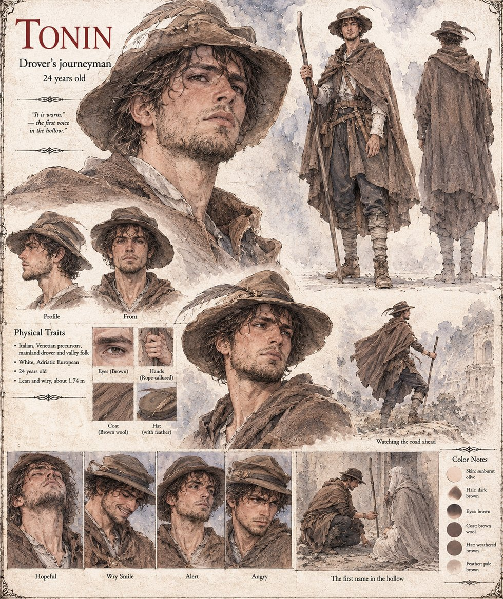

Tonin
Drover’s journeyman off the high track · third entry in the Antiphonary · the first stranger replayed · 24 on the sheet
A drover’s journeyman off the high track, Tonin stops at the fence at dusk, says his name when the sexton asks it, and goes on up the valley toward a fire that he takes for a farmhouse. On the fifteenth of Jorren, the evening the foreigner Higaide first sits at the fence, the hollow gives him back: “Oh — it is warm.” and then “It is warm.”, a man’s voice, calm, wondering, a little pleased, saying the one thing that a person says on a cold night when he is given a fire, which stops in the middle of a word after eleven seconds. It does not scream. It is the first replay of a stranger, and nobody there knows him. Sabino Rizzo says, I have no name for him; Higaide, who has been given the name that day by the sexton, says it aloud, and Sabino enters in the Antiphonary Tonin, drover’s journeyman; name given by the keeper of the Dark Ground. The sexton sets a flat river-stone with his name on it, and at the Great Lighting the Listeners at the stones, as the last of the stalks goes over, say his name in the murmur that runs down the rows: Ilario. Nico. Tonin.
The manuscript gives his trade, his name, his eleven seconds and his road, and no age, height, build, face or hair. The sheet’s age of 24, lean wiry build of about 1.74 m, brown eyes, dark brown hair, rope-callused hands, brown wool cloak, wide-brimmed hat with a long feather and drover’s staff are its own, as are its panels Hopeful, Wry Smile, Alert and Angry and its view Watching the road ahead. Its printed line It is warm. follows the manuscript, but its caption calls it the first voice in the hollow, which in the manuscript was Ilario’s nine-second scream; Tonin’s is the first replay of a stranger. Its scene The first name in the hollow, a man crouched beside a seated white-hooded figure, is not in the manuscript.
“a man’s voice, calm, wondering, a little pleased, saying the one thing that a person says on a cold night when he is given a fire”